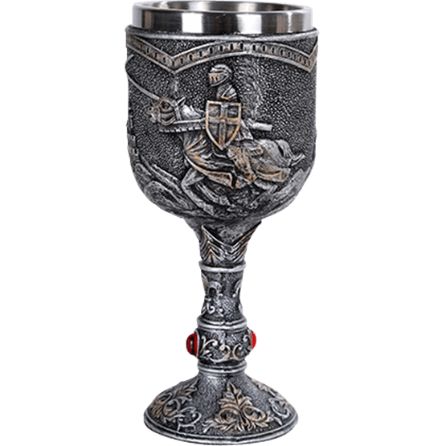

Bienvenue parmi nous, fillot
Aujourd'hui, on célèbre une fête médiévale que j'ai inventée tout à l'heure
parce que j'aime bien cette police d'écriture
Emploi du Temps
Aujourd'hui, peu de tâches t'attendent.. profites-en pour méditer sur les indices
Si tu es trop perdu, tu peux m'envoyer tes interprétations des indices et je te filerai un petit coup de main
Petit dej' à la Mine - 8h15 au Foyer
Les grasses mat' c'est cool, donc il faut en faire même quand on n'en a pas.
Ramènes-toi au foyer à 8h15, en pyjama avec ton petit déjeuner !
Land of the Free and Home of the Brave - au déjeuner
Retrouve 22merel, 22desorgues et 22prum
pour un déjeuner au 160 rue Saint-Jacques (American Corner)
Livraison Camembert - après les cours
Pour remercier 21setterblad de tout ton cœur, offre lui un fromage de ton choix, il en raffole !
Tu le trouveras en 703, et tu peux lui rendre la pioche (ou la garder, menfous)
Écriture d'invention - quand tu le souhaites
J'en ai marre d'être dictateur, donc écris un tripro sur un sujet de ton choix
Pouce d'or - Samedi Matin
Un défi chouette mais ambitieux:
en partant samedi matin, le but est d'arriver à la mer, seulement en faisant de l'autostop
Pour ce défi, tu auras besoin d'être en groupe (2 ou 3), mais c'est à toi de choisir!
Et évidemment il est assez ambitieux donc je comprends si tu refuses ;)
Indices du Jour
Indice 1
(5/5) 75Opy
Indice 2
ɥʇʇds://ᴉɯƃnɹ˙ɔoɯ/ɐ/p∩ㄥ∀Xᴉɔ
Indice 3
石室詩士我施氏，嗜獅，誓食十獅。
氏時時適市視獅。
十時，適十獅適市。
是時，適施氏適市。
氏視是十獅，恃矢勢，使是会十獅逝世。
氏拾是十獅屍，適石室。
石说室濕，氏使侍拭石室。
石室拭，氏始試食是十獅。
食時，始識是十獅屍，實一点儿十石獅屍。
試釋是汉语事
C'était des peupliers dans un forêt de cyprès, ou l'inverse ?
PS: n'hésite pas à te concerter avec les gens avec qui t'as fait un défi commun, les groupes ne sont pas anodins :))
PPS: il y a peut-être (mais vraiment peut-être) un indice qui est réparti sur plusieurs personnes..
PPPS: je suis conscient que mes indices sont durs, donc n'hésite pas à m'envoyer tes idées, demander autour de toi, surtout à des 2A..
bon courage, et tkt si t'as zéro idée je te ferais trouver ;)